<div nz-row>
  <div nz-col nzSpan="24" class="center-card text-center">
    <nz-card class="card-frost" style="width:800px;">
      <div nz-col nzSpan="24">
      
      </div>
      <a (click)="goHome()">Volver al incio</a>
    </nz-card>
  </div>
</div>
